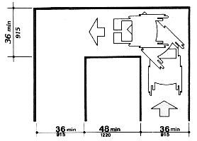
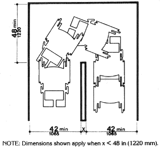
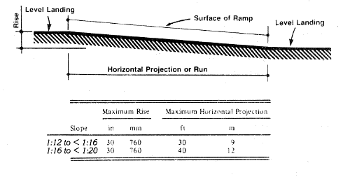

General ADA standards:
In all places all the following requirements are needed for accessible routes:
- At least one accessible route within the boundary of the site shall be provided from public transportation stops, accessible parking, and accessible passenger loading zones, and public streets or sidewalks to the accessible building entrance they serve. The accessible route shall, to the maximum extent feasible, coincide with the route for the general public.
- At least one accessible route shall connect accessible buildings, facilities, elements, and spaces that are on the same site.
- At least one accessible route shall connect accessible building or facility entrances with all accessible spaces and elements and with all accessible dwelling units within the building or facility.
- An accessible route shall connect at least one accessible entrance of each accessible dwelling unit with those exterior and interior spaces and facilities that serve the accessible dwelling unit.
- The minimum clear width of an accessible route shall be 36 in (915 mm) except at doors. If a person in a wheelchair must make a turn around an obstruction, the minimum clear width of the accessible route shall be as shown in Fig. 7(a) and (b).


For ramps:
- Slope and Rise. The least possible slope shall be used for any ramp. The maximum slope of a ramp in new construction shall be 1:12. The maximum rise for any run shall be 30 in (760 mm) (see Fig. 16). Curb ramps and ramps to be constructed on existing sites or in existing buildings or facilities may have slopes and rises if space limitations prohibit the use of a 1:12 slope or less.

- Clear Width. The minimum clear width of a ramp shall be 36 in (915 mm).
- Landings. Ramps shall have level landings at bottom and top of each ramp and each ramp run. Landings shall have the following features:
(1) The landing shall be at least as wide as the ramp run leading to it.
(2) The landing length shall be a minimum of 60 in (1525 mm) clear.
For more information on ADA guidelines of accessibility visit the following site:
ADA Laws and Guidelines